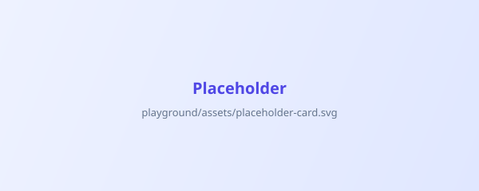

Bootstrap's .carousel with IndigoKit styling — restrained, content-focused, Bootstrap's own JS (controls, indicators, transitions, reduced-motion block). Carousel is for a short set of highlights; it is not a media-slider framework.
Basic carousel
Three content slides with previous/next controls and indicators. Controls are real buttons with aria-labels and a visible focus ring; indicators are real buttons with aria-labels.
Design tokens
Colors, spacing, radius, shadows, and motion — one source of truth mapped onto Bootstrap's variables.
Component library
Every Bootstrap component refined underneath its public API — no parallel classes.
Playground reference
Each component has a dedicated page with measured contrast, keyboard checks, and responsive notes.
Captions
A captioned image slide. The caption sits on a light surface (the placeholder art) so the dark caption text stays readable — readability is never left to image contrast alone.

IndigoKit — a Bootstrap-first design system
Modern and enterprise, built by refining Bootstrap's own API.
Accessible by measurement
Contrast, focus, and keyboard behavior are verified in the browser, not assumed.
No parallel APIs
Bootstrap stays the public surface; IndigoKit refines underneath.
Autoplay (optional)
data-bs-ride="carousel" starts autoplay — opt-in, never the default. Hover and keyboard focus pause it (Bootstrap's built-in behavior). Bootstrap's reduced-motion block disables the slide transition; the visible slide still swaps, so movement-sensitive users aren't forced through animation.
Ship announcements
Autoplay is fine for a compact highlight banner — keep it short and pause-friendly.
Respect attention
Hover and focus pause the rotation; users can always take control.
Prefer static
When in doubt, ship without autoplay — the controls and indicators work exactly the same.
Accessibility notes
Controls are real <button>s with aria-labels ("Previous slide"/"Next slide") and a visible focus ring; indicators are real buttons with aria-labels ("Slide 1"…).
The placeholder image is decorative here but carries meaningful alt text ("Abstract indigo gradient artwork") — a real image would describe its content instead. Caption text is never the only way to understand a slide.
Keyboard: Tab reaches the controls and indicators; Enter/Space activates them — native button behavior, Bootstrap's carousel JS handles the slide change. No custom keyboard engine.
Autoplay is opt-in (data-bs-ride), pauses on hover/focus, and Bootstrap's reduced-motion block removes the slide transition under prefers-reduced-motion.
Captions stay readable by design — the caption color is dark on the light placeholder surface, and a real deployment would use a scrim or a surface that guarantees contrast rather than relying on the image.